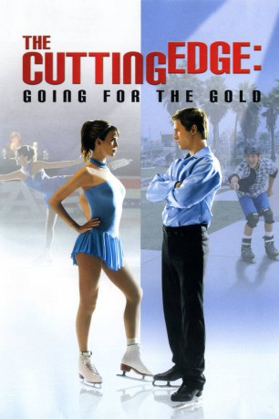
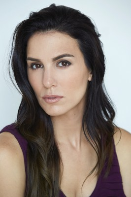
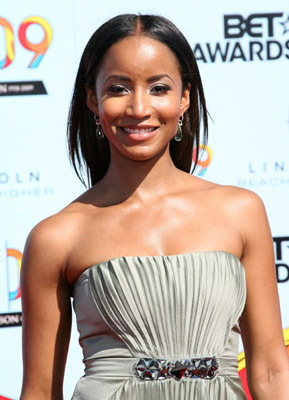

#5473 Liebe und Eis 2
Alternativ: The Cutting Edge: Going for the Gold
 
 IMDB-Wertung: 6.4 / 10
IMDB-Wertung: 6.4 / 10  Metascore: 0
Metascore: 0 
Der Wettkampf geht weiter als, Jackie Dorsey (Christy Carlson Romano), die schöne und sehr ehrgeizige Tochter der Olympischen Gewinner im Paar-Eiskunstlauf Doug (Scott Thompson Baker) und Kate, gegen ihren Willen mit dem wilden und unbekümmerten Alex Harrison (Ross Thomas) als Paar zusammengetan wird. Gemeinsam sollen sie für die Goldmedaille trainieren. Und obwohl die beiden völlig verschieden sind, müssen sie von nun an zusammenarbeiten und kommen sich dabei auch privat immer näher...
Jahr: 2006
Dauer: 94 Minuten
FSK: 6
Land: USA Studio: Sony Pictures Home EntertainmentTonspuren:
Untertitel:
Auflösung: 720p (1280x720) Größe: 3010 MB
Genre: Drama, Komödie, Liebe, Sport
Regisseur:  Sean McNamara
Sean McNamara
Drehbuch: Ian Deitchman
Soundtrack:
Darsteller:
-  Christy Carlson Romano als Jackie Dorsey
- Ross Thomas als Alex Harrison
- Kayla Carlson als Kayla - Girl Skater Fan
- Kim Kindrick als Heidi Clements
- Stepfanie Kramer als Kate Mosley-Dorsey
 Erik Aude als Pool Waiter
Erik Aude als Pool Waiter- Oksana Baiul als Nationals Commmentator
- Matt Gallant als Nationals Commmentator
-  Faune Chambers Watkins als Elisa Proctor
 Tom Dugan als Surgeon
Tom Dugan als Surgeon- Rebecca Grant als Sports Correspondant
- Patrick Hancock als Pinata Guy
 Ryan Hansen als Scottie
Ryan Hansen als Scottie- Sean McNamara als Mr. Orange
 Christine Lakin als Luanne King
Christine Lakin als Luanne King- Sydney Park als Skating Girl
- Don Swayze als Obnoxious Guy
- Alia Rhiana Eckerman als Surfer girl
- Olga Kay als Natasha - Fan
- Scott Thompson Baker als Doug Dorsey
- Sharon Carz als Female Skater
- Natasha Kuchiki als Female Skater
- Jack Haley als Sports Correspondant
- Rory Johnston als Official
- Giuseppe Manzella als Italian Waiter
- Mary Strong als Sports Commentator
Datei: X:\3-Trilogie(G-M)\Liebe und Eis\Liebe und Eis 2 (2006, FSK6, 1280x720).mkv seit 03.02.2017
Festplatte: HD Collection-2(A-Z)-3(A-M)
 Alle Filme aus Gruppe '3-Trilogie(G-M)\Liebe und Eis'
Alle Filme aus Gruppe '3-Trilogie(G-M)\Liebe und Eis'